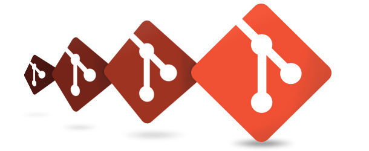
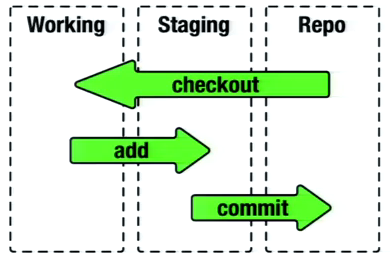
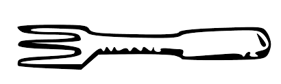
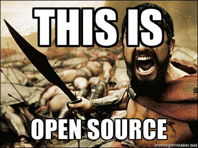

| z, ? | toggle help (this) |
| space, → | next slide |
| shift-space, ← | previous slide |
| b | blank screen |
| d | toggle debug mode |
| ## <ret> | go to slide # |
| c, t | table of contents (vi) |
| f | toggle footer |
| g | toggle follow |
| r | reload slides |
| n | toggle notes |
| p | run preshow |
| P | toggle pause |
| s | choose style |

por Helio Oliveira
Git é um VCS = Version Control System, Sistema de controle versão, existem dois tipos de VCS, os centralizados e os distribuídos, o Subversion ou SVN é centralizado enquanto GIT e Mercurial são distribuídos, isso quer dizer que nos VCS centralizados um servidor central é requirido e todos os commits são enviados para este repositório central, nos sistemas distribuídos cada desenvolvedor tem uma cópia (clone) do projeto inteiro e comita em sua cópia local, e pode enviar para um servidor remoto suas alterações que por sua vez é compartilhada com outros desenvolvedores.
Git foi escrito em 2005 por Linus Torvalds por conta de sua insatisfação com o CVS e BitKeeper, no versionamento do kernel do Linux, este é o link para um talk do Linus explicando do jeito Linus de ser suas motivações para começar este novo projeto.
O nome GIT é uma gíria Inglesa para cabeça dura ツ
Eu sou um egoísta degenerado, batizo todos os meus projetos com meu nome. Primeiro Linux, agora Git. "Linus Torvalds"


$ git config --global user.name <name>
$ git config --global user.email <email@email.org>
$ git init myAlwesomeSoftware
$ git add .
$ git status
$ git commit -m "my modification rules"
$ git branch
$ git checkout <branch-name>
$ git checkout -b <new-branch-name>
$ git clone <path-to-remote-repo> <optional-dir-name>
Clona, ou seja, faz uma cópia local de um repositório remoto, você pode passar um nome diferente do diretório original como argumento
Aqui você enconta a documentação oficial
Se você gosta de ferramentas GUI, a unica que utilizei uma vez foi o SourceTree, da Atlassian empresa do BitBucket, mas existem várias como o GitBox, GitK, GitForce, muitos IDEs tem suporte a Git devendo somente instalar um plugin, pessoalmente prefiro a command line 💪 💕
No Github temos o seguinte workflow:
Criar uma conta
Ao cadastrarmos no Github devemos copiar uma senha SSH em sua conta, se você não tem uma crie a sua, unix, windows, você pode usar uma conecão HTTPS também mas ficar colocando senha toda hora é bastante chato, a não ser que esteja em alguma rede que bloqueie a porta 22, padrão de acesso SSH.
Criando o um repositório
Depois de logado em sua conta há botão com o símbo de + no lado direito superior do site onde pode ser criado um novo repositório, é tudo bem fácil de usar, seu repositório sempre vai ter um endereço url como http://github.com/
$ git push origin master
$ git fetch
$ git fetch


